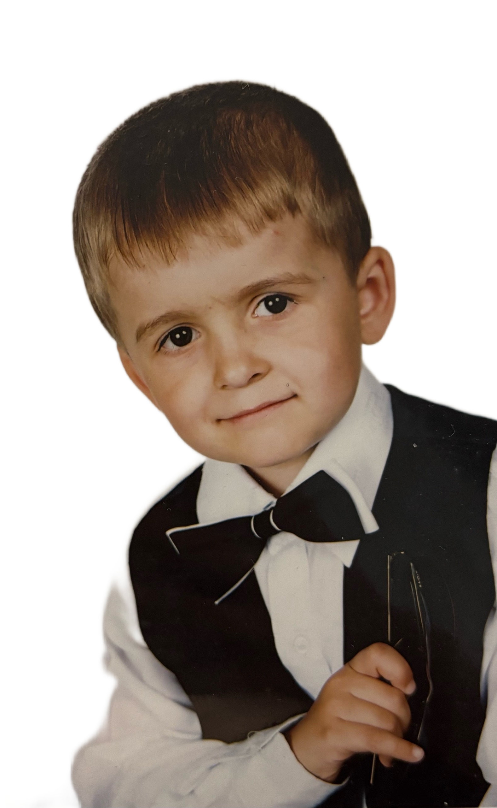
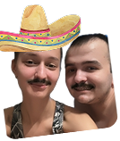
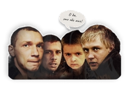
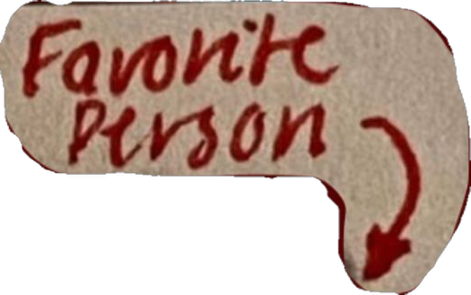
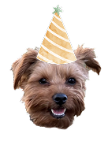
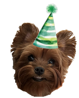
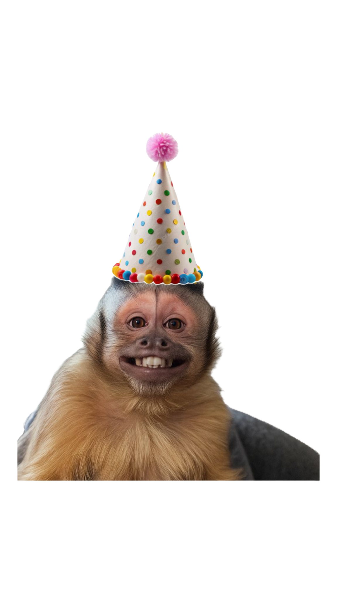

Тебе уже
2
8
!
Как хорошо, что мы нашлись!


Несмотря на то, что ты свел меня с ума
раньше времени я этому очень рада, моя Дименция
раньше времени я этому очень рада, моя Дименция
очень сильно рада что мы все таки встретились в Питере и у нас все сложилось. Не знаю как ты, а я полюбила тебя еще задолго до встречи
Мы с тобой так похожи
Немного о тебе моими глазами:

Это так круто что у меня есть такой классный, веселый, заботливый, сильный, стойкий, мужественный мальчик Димка
Хочу пожелать тебе:



В первую очередь ЗДОРОВЬЯ,
легкости в достижении своих целей, чтобы все твои мечты сбывались,
не забывай про своего внутреннего ребенка и иногда давай ему волю (а то сильно взрослым считаешь себя)
легкости в достижении своих целей, чтобы все твои мечты сбывались,
не забывай про своего внутреннего ребенка и иногда давай ему волю (а то сильно взрослым считаешь себя)
*Ну остальное всякое: любовь там, счастье у тебя есть (надеюсь) так что не желаю (вдруг другую любовь и счастье найдешь)
От Ратибора
“Я так сильно тебя люблю, что не хочу отходить от тебя даже на покакать”

От Захара
“Я так сильно скучаю по тебе, что когда ты приедешь, я отгрызу тебе ухо”

От меня:
В общем, я тебя, мы тебя сильно любим, поздравляем с этим замечательным событием - с Днем Твоего Рождения! И мы очень рады что ты у нас есть!


Представь что этот тортик настоящий, загадай желание и задуй свечки!